Neki od hardverskih elemenata će biti predstavljeni u narednoj tabeli.
| Komponenta | Slika | Opis |
|---|---|---|
| Arduino ploča | 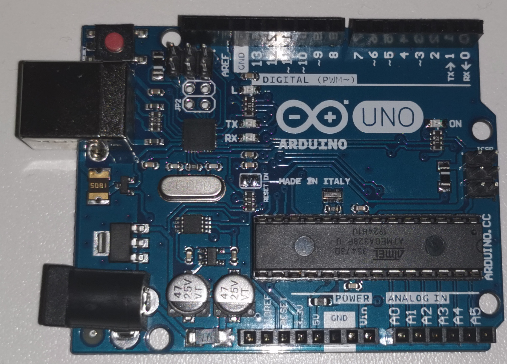 | !!!!!!!!!!!!!!!!!!!!!!!!!!!!!!!! |
| Protoploča | 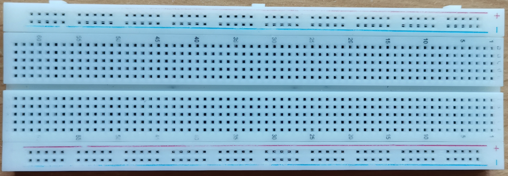 | Protoploča je konstruktivna osnova za izradu elektronskih prototipova. |
| Žice(džamperi) |
|
Žice(džamperi) se koriste za međusobno povezivanje elemenata u strujnom kolu. |
| Senzori | 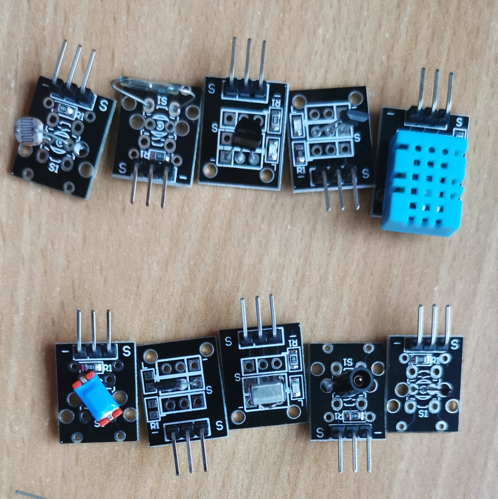 | Senzori služe da određenu vrednost, poput temperature, jačine magnetnog polja, jačine zvuka, osvetljenosti, izmere i pošalju mikrokontroleru na obrađivanje. Senzori prevode merenu fizičku veličinu u neku drugu, najčešće u otpornost, i na osnovu nje mi pratimo promene iz spiljašnje sredine. |
| Kondenzatori | 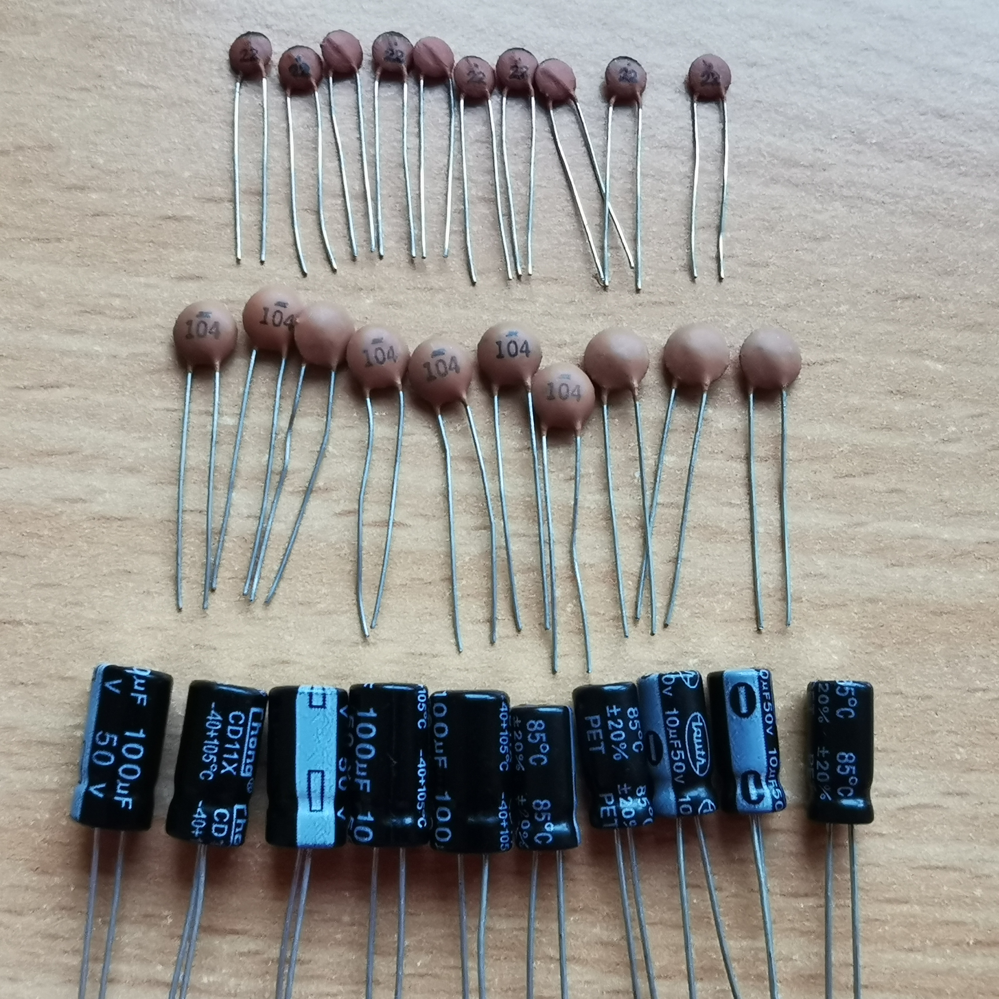 | Kondenzatori su delovi ekektričnog strujnog kola čije je osnovno svojstvo sposobnosti skladištenja energije u obliku električnog naboja. |
| Diode | 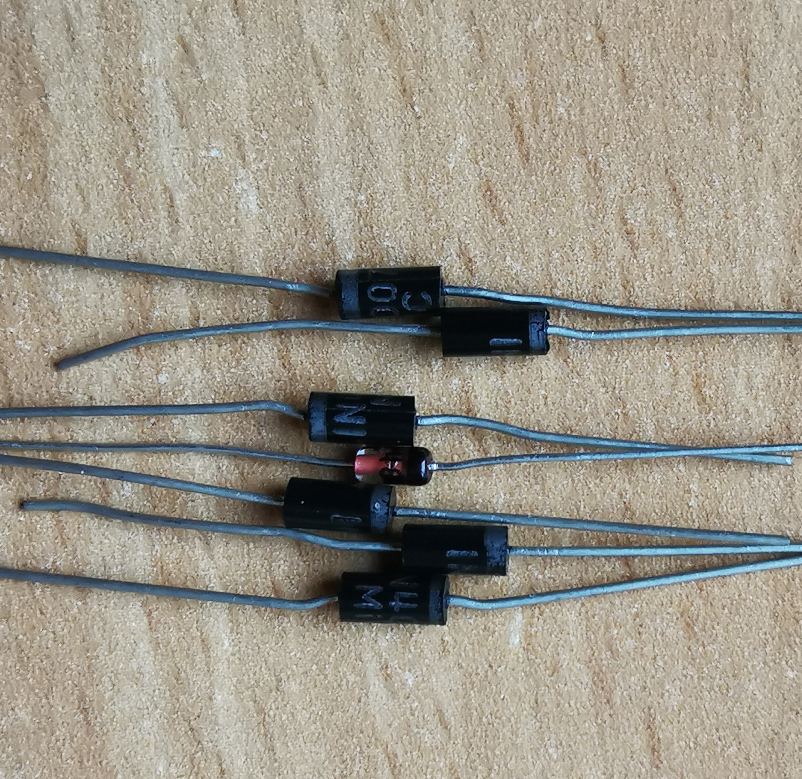 | Dioda je elektronska komponenta koja obezbeduje protok struje bez otpora ili sa veoma malim otporom u jednom smeru, dok u drugom pruža beskonačan ili veoma veliki otpor. |
| LED | 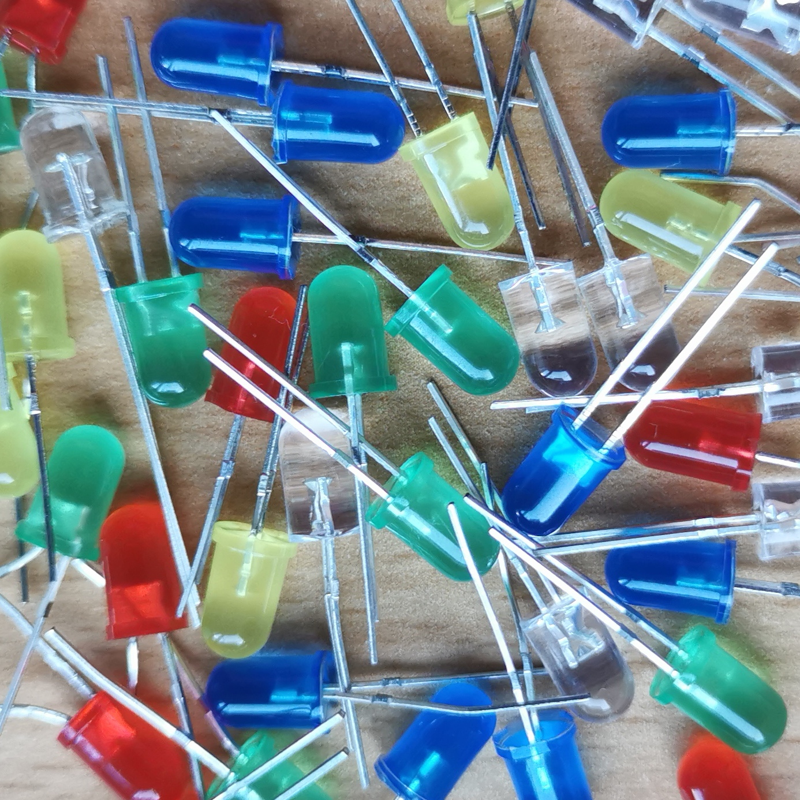 | LED(light-emiting diode) je posebna vrsta diode koja emituje svetlost kad je potpuno polarisana. |
| Zujalice | 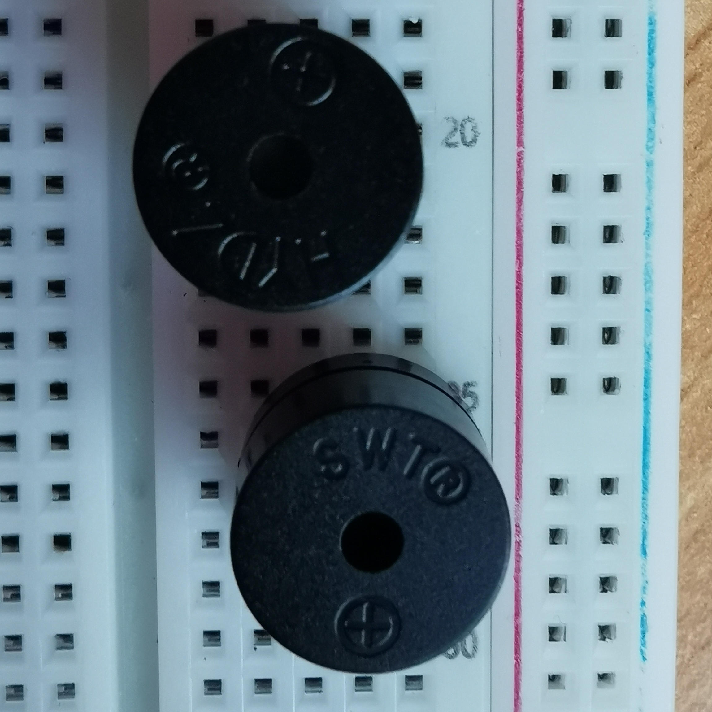 | Piezo zujalica je uređaj za audio signalizaciju napajan pomoću piezoelektriciteta, koji se stvara pomoću materijala koji generiše električni naboj kada se izloži mehaničkom pritisku. |
| Tranzistori | 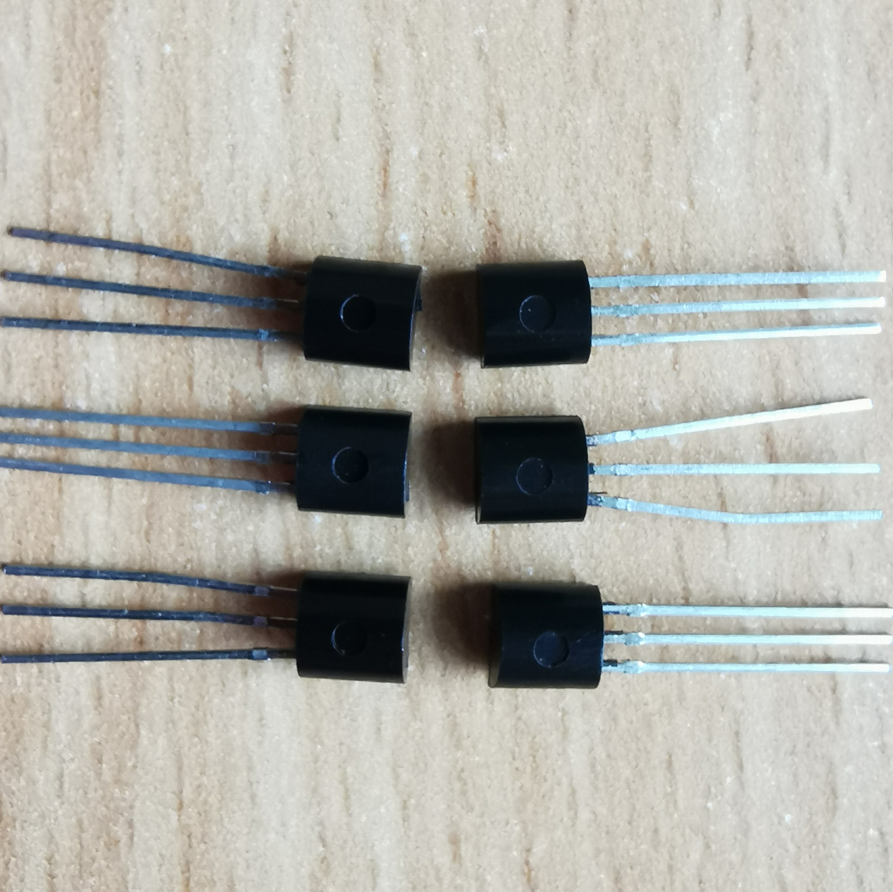 | Tranzistori su aktivni pluprovodničji elementi koji se koriste za pojačanje ili prkidanje struje u kolima. Takođe se koristi za stabilizaciju napona i modulaciju signala. |
| Otpornici | 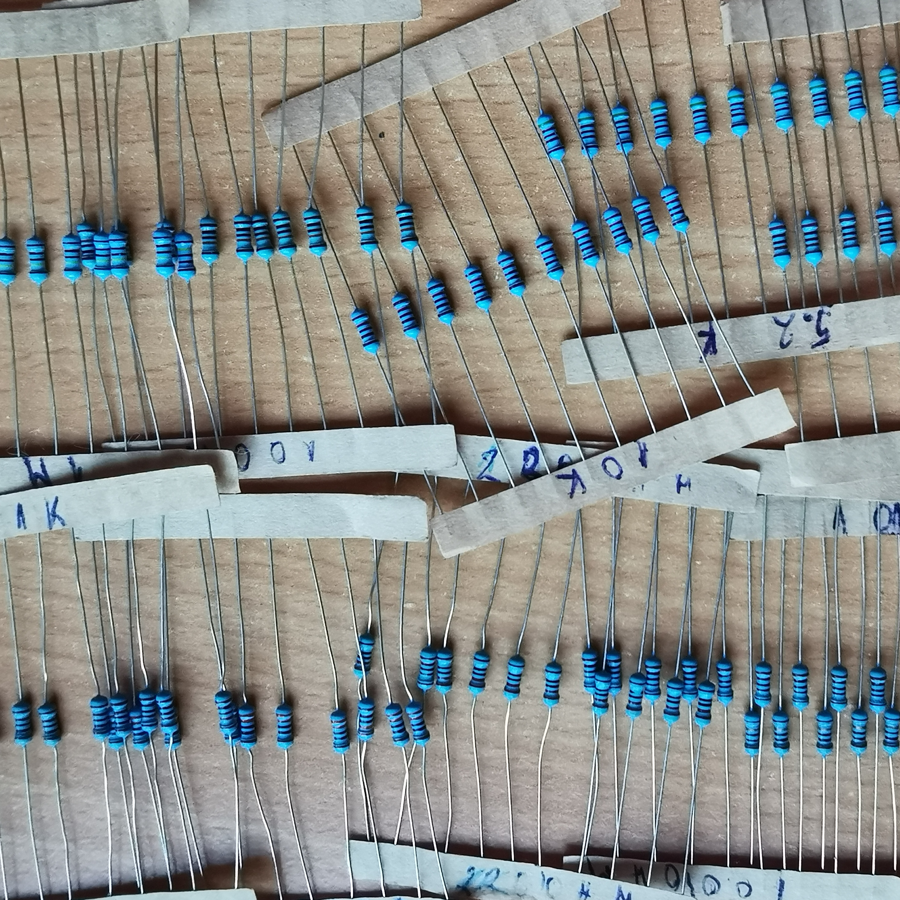 | Otpornici služe da smanje jačinu struje u kolu i na taj način zaštite ostale komponente od uništenja(pregorevanja). | Servo motor | 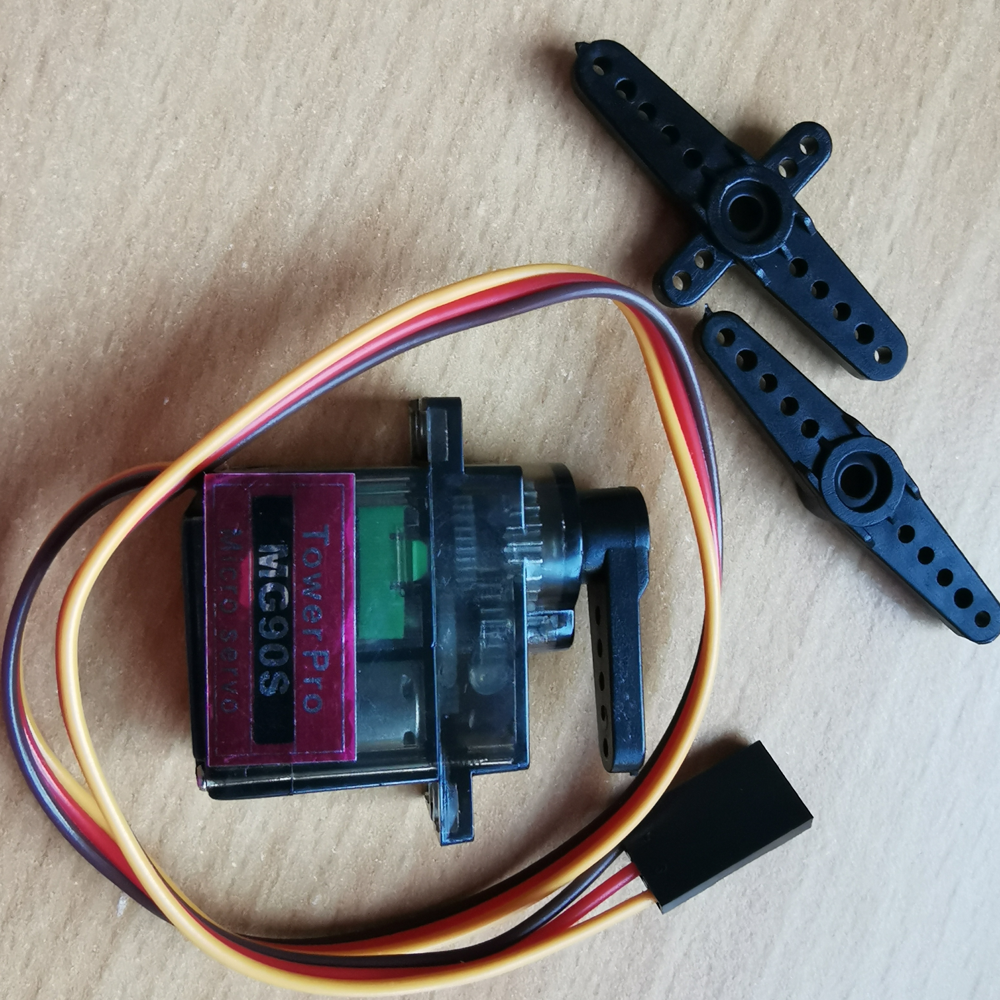 | Servo motori su rotacioni aktuatori koji se koriste u aplikacijama gde je potrebno upravljanje ugaonom pozicijom, brzinom i ubrzanjem. | Steper motor | 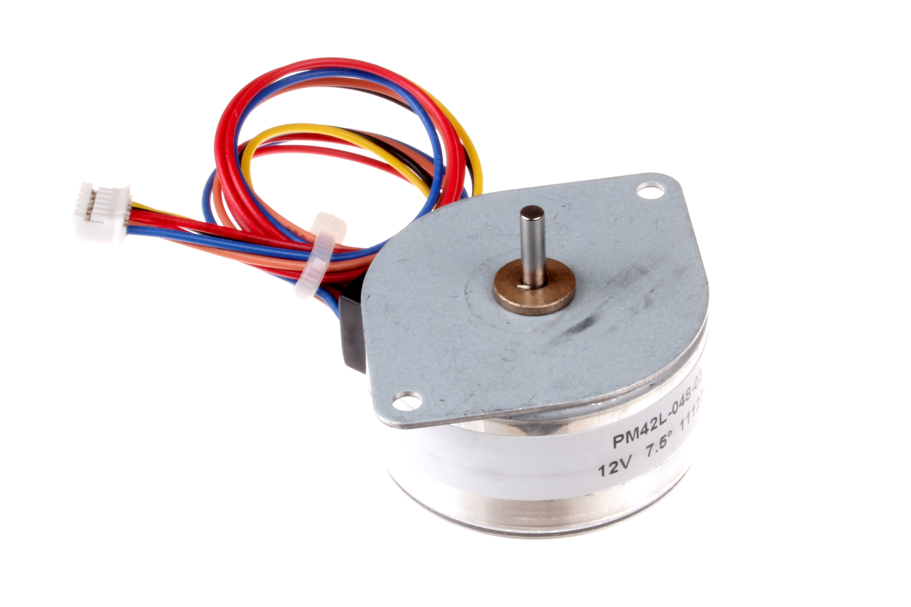 | Steper (step) motor je električni motor bez četkica koji deli calu rotaciju na određen broj jednakih koraka. |